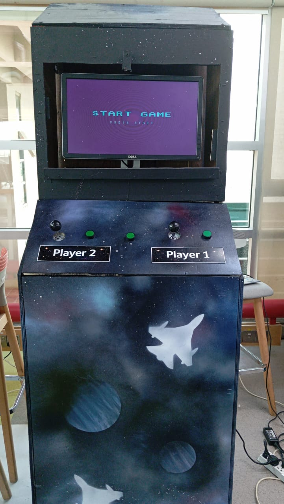

During my CS studies at Habib University, I created a two-player fighter jet arcade game built from scratch in Verilog using Xilinx Vivado. I wired up dual analog joysticks for smooth, 360° jet navigation and tactile push buttons for firing weapons and triggering power-ups. Translating those physical controller signals into real-time game actions meant writing low-level digital logic for signal debouncing, collision detection, and VGA rendering—making the hardware and on-screen gameplay work together seamlessly.
